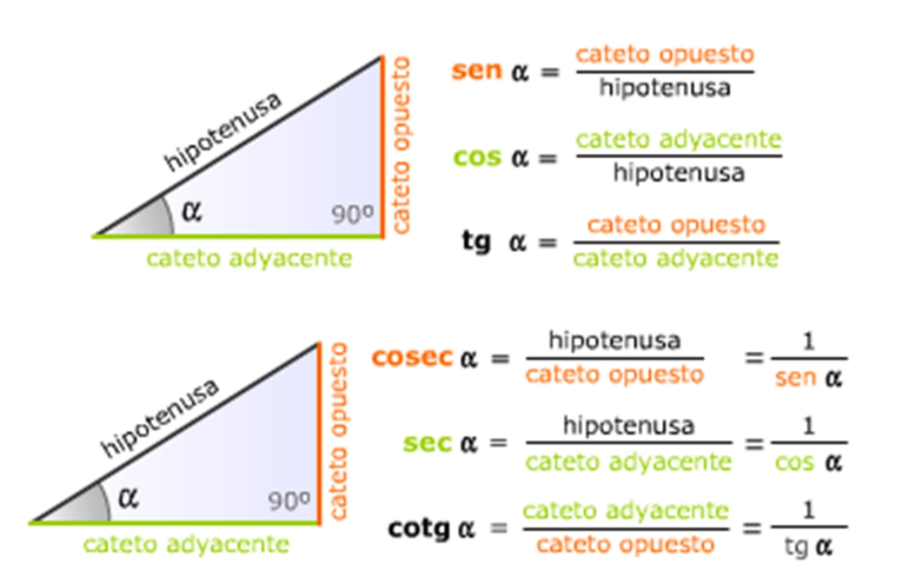
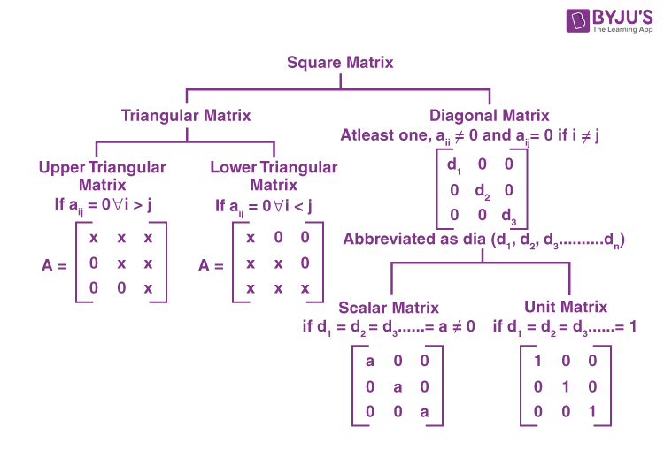

Unidad 1: Números y Operaciones
Números Naturales
Los números naturales son los que se utilizan para contar: 1, 2, 3, ...
Operaciones Básicas
Suma: Combinación de cantidades. Ejemplo: 3 + 2 = 5.
Resta: Diferencia entre cantidades. Ejemplo: 5 - 2 = 3.
Multiplicación: Suma repetida. Ejemplo: 3 × 2 = 6.
División: Separación en partes iguales. Ejemplo: 6 ÷ 2 = 3.
Unidad 2: Álgebra
Conceptos Básicos
El álgebra utiliza letras para representar números en ecuaciones y expresiones.
Variables y Coeficientes
Variable: Representa un número desconocido. Ejemplo: x, y.
Coeficiente: Número que multiplica a la variable. Ejemplo: en 3x, 3 es el coeficiente.
Ecuaciones
Una ecuación es una igualdad que contiene una variable. Ejemplo: 2x + 3 = 7.
Unidad 3: Geometría
Figuras Geométricas
Las figuras geométricas son formas que ocupan un espacio.
Tipos de Figuras
Polígonos: Figuras con lados rectos. Ejemplo: triángulo, cuadrado.
Círculos: Figuras redondas sin lados. Ejemplo: circunferencia.
Áreas y Perímetros
Área: Superficie dentro de una figura. Ejemplo: Área del cuadrado = lado × lado.
Perímetro: Suma de todos los lados. Ejemplo: Perímetro del cuadrado = 4 × lado.
Unidad 4: Trigonometría
Funciones Trigonométricas
Las funciones trigonométricas relacionan los ángulos de un triángulo con sus lados.
Funciones Principales
Seno (sin): Relación entre el lado opuesto y la hipotenusa.
Coseno (cos): Relación entre el lado adyacente y la hipotenusa.
Tangente (tan): Relación entre el lado opuesto y el lado adyacente.
Unidad 5: Estadística
Conceptos Básicos
La estadística es la recolección y análisis de datos.
Medidas de Tendencia Central
Media: Promedio de un conjunto de datos.
Mediana: Valor central en un conjunto ordenado.
Moda: Valor que más se repite.
Unidad 6: Probabilidad

Definición
La probabilidad mide la posibilidad de que ocurra un evento.
Cálculo de Probabilidades
Fórmula: P(A) = Número de casos favorables / Número total de casos.
Ejemplo: Lanzar un dado: P(3) = 1/6.
Unidad 7: Funciones
Definición
Una función es una relación entre dos conjuntos donde a cada elemento del primer conjunto le corresponde uno del segundo.
Tipos de Funciones
Lineales: Tienen la forma f(x) = mx + b.
Cuadráticas: Tienen la forma f(x) = ax² + bx + c.
Unidad 8: Sistemas de Ecuaciones
Definición
Un sistema de ecuaciones es un conjunto de dos o más ecuaciones con las mismas variables.
Resolución de Sistemas
Método de Sustitución: Resolver una ecuación para una variable y sustituir en la otra.
Método Gráfico: Representar las ecuaciones en un gráfico y encontrar el punto de intersección.
Unidad 9: Matrices
Definición
Una matriz es un arreglo rectangular de números dispuestos en filas y columnas.
Operaciones con Matrices
Suma: Se suman elemento a elemento.
Multiplicación: Se multiplica cada fila de la primera matriz por cada columna de la segunda.
Unidad 10: Geometría Analítica
Definición
La geometría analítica combina el álgebra y la geometría mediante el uso de coordenadas.
Ecuación de la Recta
Forma pendiente-intersección: y = mx + b, donde m es la pendiente y b es la intersección con el eje y.